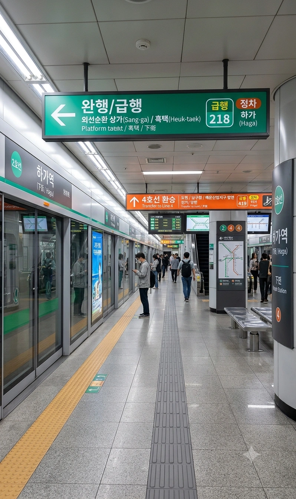
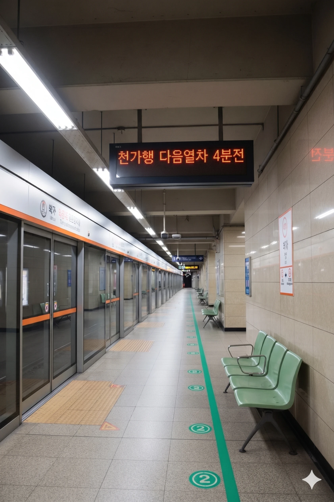

효빈 도시철도 2호선 218번 및 4호선 419번 환승역. 효빈광역시 안천구 하가동 1283 지하에 위치해 있다. 안천구의 핵심 상권을 관통하는 교통의 대동맥이자, 인접한 상가역, 당가역과 마찬가지로 팔천강 본류의 거대한 복개도로 하부 암반층을 뚫고 지어진 심도 깊은 지하철역이다.
1989년 2호선 1단계 구간 개통과 함께 최초로 영업을 시작했으며, 2003년에 4호선이 개통하면서 명실상부한 안천구 교통의 최대 십자 환승 거점으로 거듭났다.
이 역 역시 북쪽의 상가역과 마찬가지로, 지표면 바로 아래를 거대하게 관통하는 팔천강의 무시무시한 흑수(黑水) 지하수계를 피하기 위해 까마득한 암반층까지 파고들어 건설되었다.[1] 서류상 역사는 지하 3층 구조로 등록되어 있으나, 복개천을 우회하기 위해 파고든 실제 체감 심도는 일반 지하철의 지하 6층 이상 깊이에 달한다. 이 때문에 지상에서 승강장까지 내려가는 에스컬레이터의 경사가 아찔할 정도로 가파르다.
지하 2층(2호선)과 지하 3층(4호선)을 잇는 환승 동선은 수직으로 곧게 뻗어 있어 거리는 짧은 편이지만, 출퇴근 시간에는 수만 명의 인파가 쏟아지며 일명 '무빙워크 달리기' 생존 경주가 벌어지곤 한다. 특히 암반을 깎아 만든 특유의 서늘한 기운이 감도는 환승 통로 한가운데, 2호선의 초록색 띠와 4호선의 주황색 띠가 선명하게 십자로 교차하는 천장 디자인은 철도 동호인들 사이에서 유명한 포토존으로 꼽힌다.
|
2
4
|
||
|---|---|---|
| 번호 | 주요 시설 및 방향 | 비고 |
| 1 | 고소초등학교 | |
| 2 | 신동중학교, 당가1동 행정복지센터 | |
| 3 | 효빈안천소방서, 효빈안천경찰서 | |
| 4 | 하가초등학교 | |
| 5 | 하가사거리 | 상가 밀집 구역 |
| 6 | 하가사거리 | |
| 7 | 안천중학교, 효빈농생명고 | 학생 수요 많음 |
2호선과 4호선 모두 급행열차가 정차하는 안천구 최고의 핵심 거점 역이다.
※ 복선 섬식 승강장

| 상가 ↑ | |||
| ㅣ | 하 | 상 | ㅣ |
| ↓ 당가 | |||
| 상 | 2 효빈 도시철도 2호선 (완행/급행 공용) | 효빈대학교·중앙로·월천 방면 (급행 정차) |
| 하 | 2 효빈 도시철도 2호선 (완행/급행 공용) | 당가·고송교차로 방면 (급행 정차) |
※ 복선 상대식 승강장

| 뇌전 ↑ | |||
| 하 | ㅣ | ㅣ | 상 |
| ↓ 백합공원 | |||
| 상 | 4 효빈 도시철도 4호선 (완행/급행 공용) | 도변·남구청·해운산업지구 방면 (급행 정차) |
| 하 | 4 효빈 도시철도 4호선 (완행/급행 공용) | 천가 방면 (급행 정차) |
2호선과 4호선의 막강한 환승 네트워크와 안천구 핵심 상권 수요가 맞물려, 역 전체 이용객은 매년 가파르게 상승하여 2만 명을 훌쩍 넘긴 상태다.
| 하가역 이용객 통계 | ||||
|---|---|---|---|---|
| 연도 | 2 |
4 |
합계 | 비고 |
| 2020년 | 8,609명 | 9,357명 | 17,966명 | 코로나19 여파 |
| 2021년 | 8,705명 | 9,462명 | 18,167명 | |
| 2022년 | 10,123명 | 11,003명 | 21,126명 | |
| 2023년 | 10,301명 | 11,196명 | 21,497명 | |
| 2024년 | 10,482명 | 11,393명 | 21,875명 | 역대 최고치 갱신 |
| 구분 | 정류소명 | 노선 번호 |
|---|---|---|
| 순방향 | 하가역 | 3, 24, 35, 47, 48, 40, 241, 258, 341, 351, 441, 471, 472, 481, 582, 842, A01, 뇌전01 |
| 역방향 | 하가역 (건너편) | 03-1, 42, 53, 74, 84, 40-1, 421, 528, 341, 351, 441-1, 741, 742, 841, 852, 842, A01R, 뇌전01-1 |